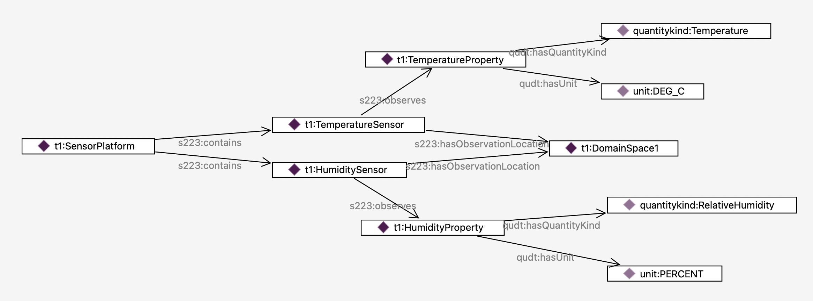
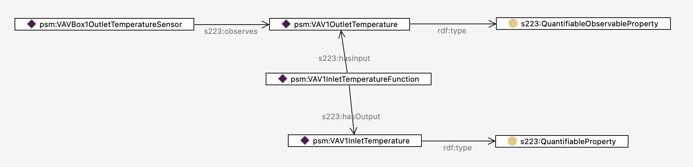

Sensors and Properties#
The 223 standard defines a variety of specialized sensors defined as a hierarchy of subclasses under the class s223:Sensor. This explanation section discusses some common relationships among sensors, and between sensors and properties.
Sensors versus Sensor Platforms#
The standard constrains an instance of a Sensor to observe a single s223:ObservableProperty. Usually it is an instance of the subclass s223:QuantifiableObservableProperty that has a numerical value, but some sensors do generate non-numerical values such as alarms or presence, in which case the property is an instance of s223:EnumeratedObservableProperty.
Equipment that observes multiple kinds of properties, say temperature and humidity, is modeled as an instance of s223:Equipment that contains (s223:contains) an instance of s223:TemperatureSensor and s223:HumiditySensor respectively.

Note that if any of the sensors have s223:ConnectionPoints, the pattern described here must also be followed. This might be the case for a flow sensor, for example.
Derived Properties#
Another constraint in the 223 standard is that an s223:ObservableProperty must be associated with a s223:Sensor that observes a phenomenon and generates the value of the property. The sensor s223:observes the property.
How does one model a property that is not directly observed by a sensor? This is best modeled using a s223:Function that has one or more input properties (s223:hasInput) and one or more output properties (s223:hasOutput). The input properties may be directly observed by sensors, or may themselves be the outputs of other functions. The output property would be modeled as an instance of s223:QuantifiableProperty or s223:EnumerableProperty as appropriate, but it is not a s223:ObservableProperty.
In this way, a model may contain the computed temperature of a room based on some distant sensors and air flow rates for example.
An example is the psm:VAV1OutletTemperature property from the example model found here.
